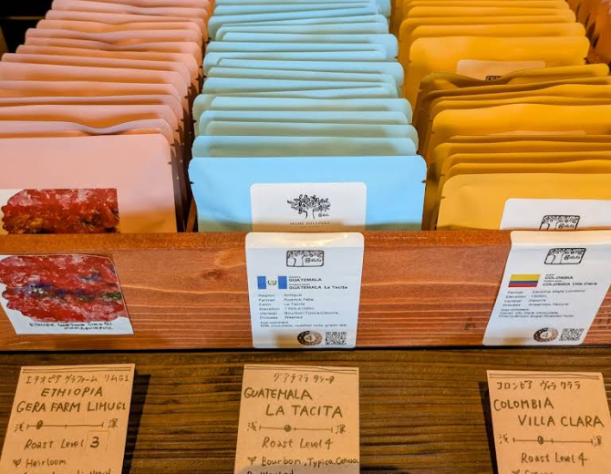
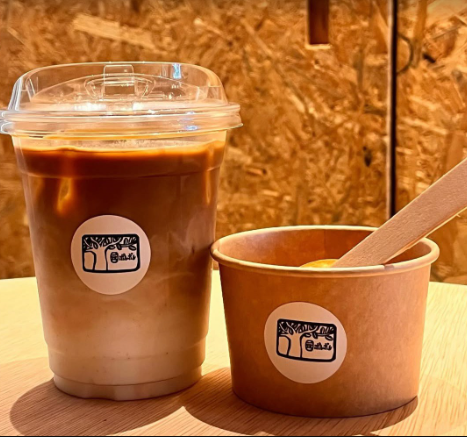
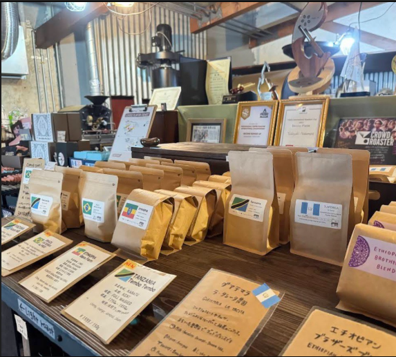

【沖縄コーヒーNo.1】豆ポレポレの豆は飲む価値アリ！



沖縄市高原にある「豆ポレポレ」は、焙煎の世界大会優勝経験を持つオーナーが手がける、沖縄トップクラスのコーヒー豆専門店です。高品質な豆が持つ感動レベルの美味しさを体験できます。現在はテイクアウトや豆販売がメインですが、コーヒー好きなら一度は訪れるべきお店です。
外せない！お店の推しメニューと魅力
① 世界が認めた焙煎技術と浅煎りの魅力
豆ポレポレのオーナーは、焙煎技術のコンクールで日本一になった経歴を持つ世界トップクラスの焙煎士です！
特に浅煎りの豆はフルーティーで華やかな香りが特徴で、コーヒーの概念が変わる美味しさだと評判です!
② 豆の個性を楽しめる、テイクアウトコーヒー
現在は主に豆の販売とテイクアウトでの提供を行っています。
水出しコーヒーや、黒糖カフェオレなどめったに聞かないコーヒーが沢山あり
専門知識豊富で笑顔が素敵なスタッフさんたちが好みに合わせた豆や淹れ方をアドバイスしてくれます！
店舗情報
- 店名
- 豆ポレポレ
- 住所
- 沖縄県沖縄市高原6-13-8
- 営業時間
- 火・水・木・金・土 12:00 - 17:00
- 定休日
- 月曜日、日曜日
- ウェブサイト
- https://www.mamepolepole.com/